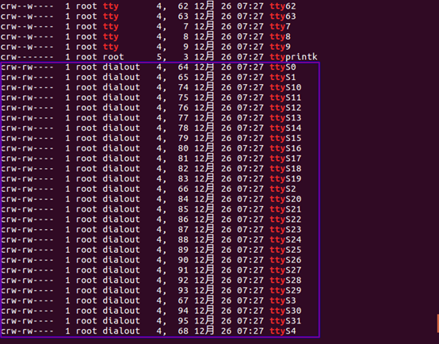
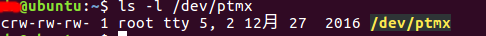
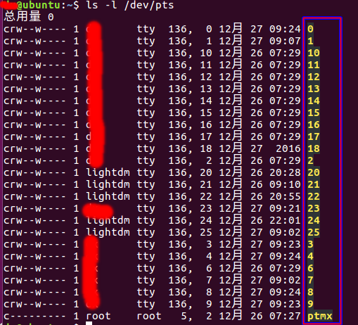
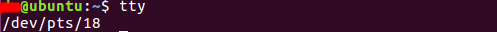

linux学习笔记(5)-终端
概述
终端是一种特殊的字符设备，用来向计算机输入数据和显示计算机的输出，最早的终端是由teletype公司生产的一种电传打字机，它将从穿孔纸带读取的程序代码传送给计算机，将计算机的输出以纸质形式打印出来。tty是teletype的缩写，后来便成了终端设备的代名词。
串行端口终端
与计算机串行端口（RS-232）连接的终端设备，对应的设备文件名称为/dev/tty（或/dev/cu）+类型+设备编号，如/dev/ttyS0，S表示设备类型，0为指定类型下的设备编号。这里的串行端口可以是通过硬件或软件模拟的，如USB转串口，虚拟串口。

伪终端
成对存在的逻辑设备，包括主、从设备，可以为主、从设备上的应用程序提供一种双向通信管道，从设备上的应用进程可以像使用真实终端一样从伪终端读入数据（或输出信息）。Linux支持BSD和system V两种风格的伪终端设备，BSD风格下伪终端是系统预创建的，**/dev/ptyXY表示主设备，/dev/ttyXY表示从设备，**其中，X、Y分别属于字符集{{p-z},{a-e}}和{{0-9},{a-f}}。system V风格（又称为UNIX 98）下伪终端是动态创建的，所有的主设备对应的设备文件都是/dev/ptmx（主设备号为5，次设备号为2），而从设备对应的设备文件都位于/dev/pts/目录下，以设备的数字编号命名（如/dev/pts/0）。


控制台终端
提供系统管理接口的终端设备，读取管理员的操作指令，输出系统运行信息（应用程序、系统程序、内核等）。控制台对应的设备文件名称为**/dev/console，Linux系统中可以在内核启动时指定控制台对应的终端设备（比如ttyS0）**，对console文件的操作会转义为对实际终端设备的操作。控制台是可选的Linux内核配置项，大多数嵌入式系统并不支持控制台（比如手机），在系统启动后直接提供一个用户操作界面。
控制台只允许单用户登录，一些类UNIX系统（如BSD、Linux、UnixWare等）中引入了虚拟控制台，也称为虚拟终端（VT），允许多个用户同时从不同的VT登录，创建相互隔离的系统会话。现行的Linux发行版本中一般会创建7个虚拟控制台，对应的设备文件依次为/dev/tty1-tty7，另外/dev/tty0指示当前虚拟控制台，用户可以通过按键Alt+F1-7进行控制台切换。虚拟控制台以显示器与键盘作为IO设备，linux系统缺省控制台为tty0，因此默认情况下，系统启动信息会在显示器上输出，用户从键盘输入登录信息。Linux系统允许将多个设备指定为控制台，此时系统信息会在指定的多个设备上同时输出，但输入只能从最后指定的终端设备上读取。
控制终端
任何系统会话都基于一个特定终端，即为会话发起进程的控制终端。发起会话的进程为会话的头进程，头进程的进程组ID与会话ID都等于头进程的PID，通过fork调用生成的子进程会继承父进程的会话ID、进程组ID和控制终端属性。/dev/tty表示当前进程的控制终端，主设备号为5，次设备号0。
tty命令可以查看当前会话所使用的实际终端设备，ps ax命令可以查看系统中所有进程的控制终端（如果程序没有控制终端，如内核线程、守护进程，TTY一栏显示为“？”）。

通过ioctl调用对/dev/tty设置TIOCNOTTY标记将使得调用进程与其控制终端脱离，如果调用进程为会话头进程，当前会话的所有进程都会丢失控制终端，在后台运行的守护进程需要使用这种调用。setsid调用可以使调用进程（不能是头进程）在新会话中运行，与当前会话控制终端脱离，并成为新会话的头进程，此时调用进程将不具有控制终端。当系统会话因外部原因异常终止时（如网络故障导致telnet连接断开），会话关联的所有进程将失去控制终端。